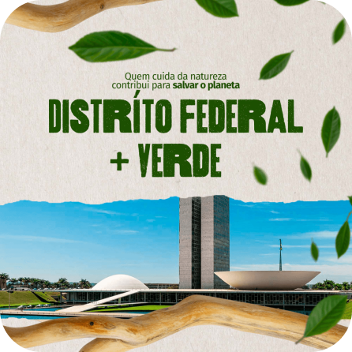
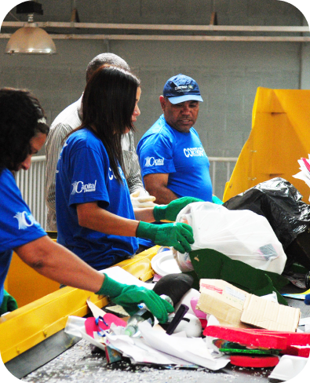

DISTRITO FEDERAL + VERDE, FAÇA PARTE VOCÊ TAMBÉM!
Este projeto é fruto de uma atividade prática desenvolvida na faculdade, com o objetivo de conscientizar a população do Distrito Federal sobre a importância da sustentabilidade. Aqui, você encontrará informações sobre os principais pontos de coleta seletiva na nossa região, além de dicas valiosas para tornar a cidade mais verde e sustentável. Junte-se a nós nessa iniciativa!


PONTOS DE COLETA:DISTRITO FEDERAL
O Distrito Federal conta com nove pontos de coleta seletiva, estrategicamente localizados de acordo com a área de atuação das cooperativas. Esses pontos permitem que você faça a destinação correta de resíduos, contribuindo diretamente para a reciclagem e preservação ambiental. Confira as localidades e encontre o ponto mais próximo:
- Brazlândia
- Cruzeiro
- Lago Sul
- Lago Norte
- Jardim Botânico
- Paranoá
- Riacho Fundo I
- Riacho Fundo II
- São Sebastião